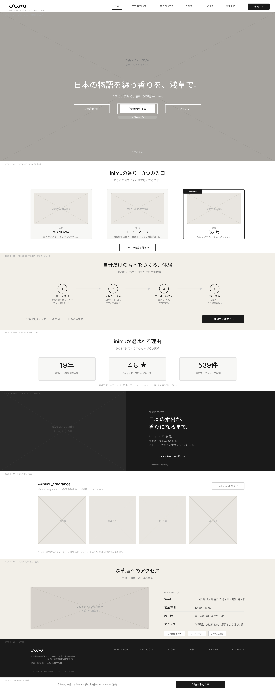

DOCUMENT 05
ワイヤーフレーム
ワイヤーフレーム作成方法
トップページ
トップページ ワイヤーフレーム（PC版） 必須
Figmaで作成したワイヤーフレームのスクリーンショットを配置

配置意図の説明 必須
各セクションの配置理由とユーザーへの効果
来店理由を3秒で形成する唯一のファーストビュー。
全画面ヒーロービジュアルで3つの来店目的（お土産／体験／香水）への入口を提示。
| 項目 | 配置理由とユーザーへの効果 |
|---|---|
| ① 全画面ヒーロービジュアル | ファーストビューで世界観と店舗の魅力を直感的に伝え、訪問直後に「ここは何のお店か」を理解しやすくする。ユーザーは短時間で自分に関係のある店だと判断しやすくなる。 |
| ② ブランドキャッチコピー | ブランドの価値や独自性を短い言葉で明確にし、浅草で立ち寄る理由を瞬時に形成しやすくする。ユーザーは他店との違いを早くつかめるため、興味を持ったまま次の情報へ進みやすい。 |
| ③ 来店目的別CTA×3 | お土産、体験、香水という主要ニーズごとに導線を分けることで、ユーザーが自分に合う入口を迷わず選べるようにする。ユーザーは探したい情報へ最短で到達でき、離脱しにくくなる。 |
| ④ 商品3層プレビュー | 取り扱い商品の幅を一目で見せることで、価格感や選択肢を把握しやすくし、比較検討の初期不安を下げる。ユーザーは「自分向けの商品がありそうか」を早く判断でき、検討を続けやすくなる。 |
| ⑤ 信頼実績バッジ | 実績や評価を視覚的に提示し、初回来店前の不安を軽減して安心感を補強する。ユーザーは初めての来店でも心理的ハードルが下がり、予約や訪問の判断をしやすくなる。 |
| ⑥ Instagram最新フィード | 最新の店内雰囲気や商品、体験の様子を見せることで、現地の温度感を伝え、来店後のイメージを具体化しやすくする。ユーザーは写真ベースで体験を想像できるため、「行ってみたい」という気持ちを高めやすい。 |
| ⑦ アクセス・営業日案内 | 行き方や営業情報をすぐ確認できる位置に置くことで、検索の手間を減らし、来店行動への移行を後押しする。ユーザーは不明点をその場で解消でき、来店直前の離脱を防ぎやすくなる。 |
下層ページ
下層ページ ワイヤーフレーム 必須
各下層ページのワイヤーフレームを順に配置
（ここに各下層ページのワイヤーフレーム画像と説明を配置） 【ページ名1】 <img src="../images/wireframe/page1-pc.png" alt="ページ名1 ワイヤーフレーム"> 配置意図：（説明） 【ページ名2】 <img src="../images/wireframe/page2-pc.png" alt="ページ名2 ワイヤーフレーム"> 配置意図：（説明）
Webアプリケーション画面
Webアプリ画面 ワイヤーフレーム 必須
主要な画面（ログイン・一覧・登録・詳細・編集）のワイヤーフレーム
（ここにWebアプリ画面のワイヤーフレーム画像を配置）
スマートフォン版
スマートフォン版 ワイヤーフレーム 任意
主要ページのスマートフォン版ワイヤーフレーム
（ここにスマートフォン版のワイヤーフレーム画像を配置）